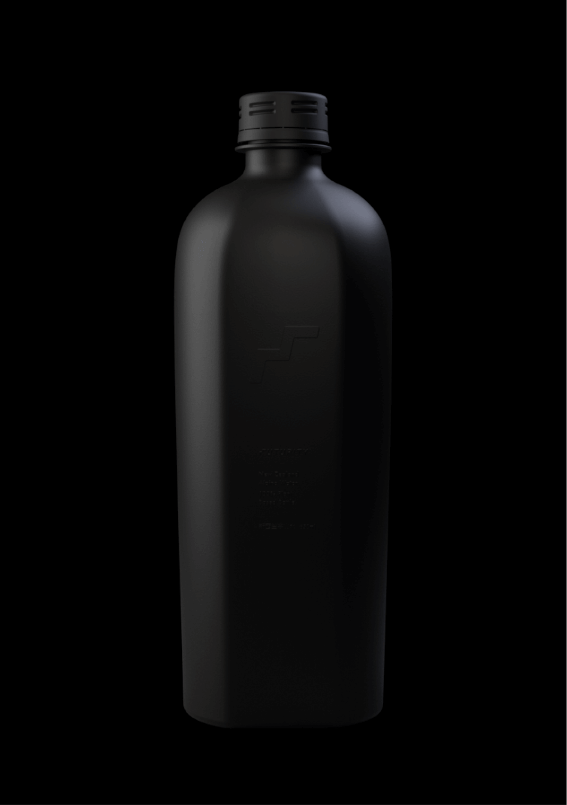

Welcome, Air NZ
Hi [custom name field],
Welcome to Futurity Manufacturing. Introducing our new 650ml plant-based bottle made from non-GMO sugarcane and designed to be commercially compostable. Our bottles can be tailored to work within your brand needs and guidelines by customising the colour and design of every bottle with the use of our proprietary printing technology.
'Contact us' (button) to order your free samples and find out more.
Products for the future.
Order your free custom samples now